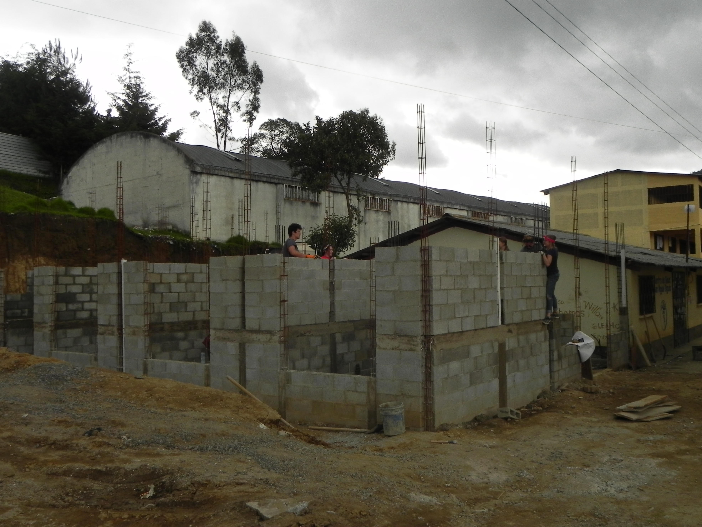
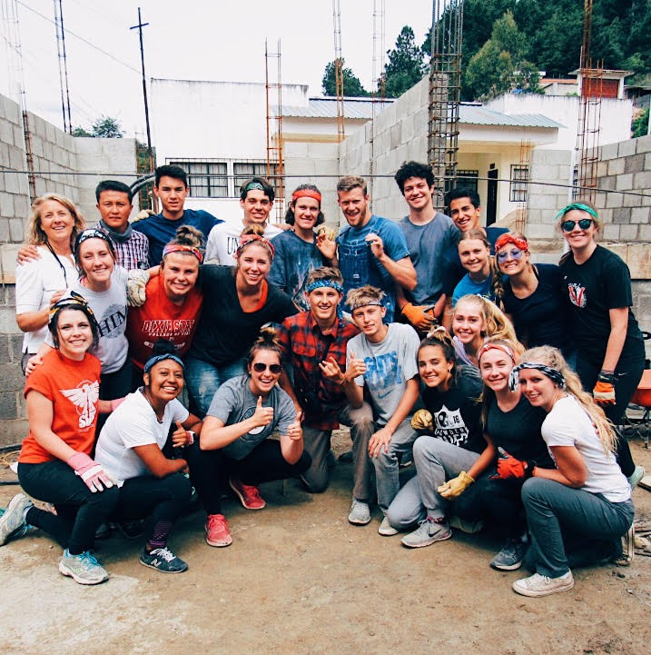
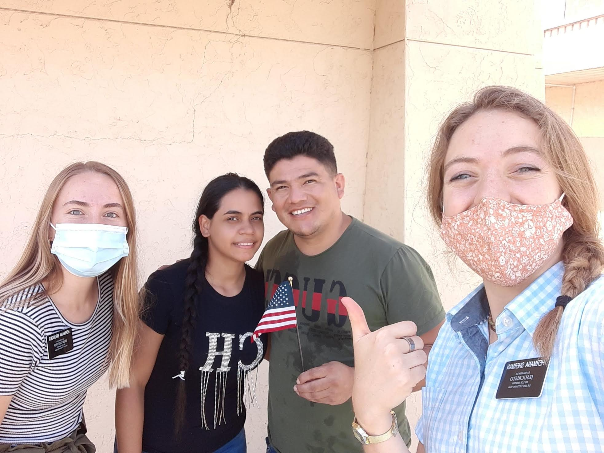

Work Experience
BYU Regulatory Accounting and Reporting - Accounting Clerk
- Enhanced leadership skills by presenting in staff trainings
- Coordinated the timely reissue of 20+ checks monthly to university vendors
- Developed proficient skills generating and using Excel and Access databases
The Church of Jesus Christ of Latter-day Saints - Full-Time Service Representative
- Enhanced leadership skills by conducting frequent trainings on goal-setting, teaching, and leadership skills under the direction of the mission president
- Led and directed 9 volunteers in setting and achieving organizational goals
- Maintained a weekly schedule of 80+ hours
- Developed proficient skills of communication and giving instruction in the Spanish language
Whitmore Global Management Center BYU Marriott School - Student Administrator
- Managed applications for hundreds of BYU student applicants seeking international business credentials through a Global Management Certificate
- Key team member tasked with executing an educational event for over 200 participants
- Developed proficient skills in Microsoft Office applications to manage office finances and operations, and produce educational content for international business students
Western Obstretrics and Gynecology - Medical Assistant
- Coordinated daily administrative tasks
- Performed duties in accordance with company policies and procedures while maintaining organizational order, and improving customer service and client relationships
- Developed strong written communication skills by documenting all services provided to patients
Education
Education
Brigham Young University
Major: Pre-business Anticipated graduation: April 2025
- Recipient of Brigham Young Grant and Utah Regents Scholarship
- Member of the Social Impact Association and BYU Women in Business Association
Bingham High School
High School Diploma May 2019
- Consistent Honor Roll student
- Participant on Bingham High School Track and Field team and Debate club
Volunteer Experience
Volunteer Experience
"Unless we lose ourselves in service there is little purpose to our lives" - President Thomas S. Monson
- Volunteer for Catholic Charities in San Antonio, Texas
- Volunteer for the Val Verde Border Humanitarian Coalition in Del Rio, Texas
- South Jordan City Youth Council Member
- Part-time Volunteer at Jordan Valley Medical Center
- Humanitarian Experience for Youth (HEFY) Volunteer in Quetzaltenango, Guatemala



